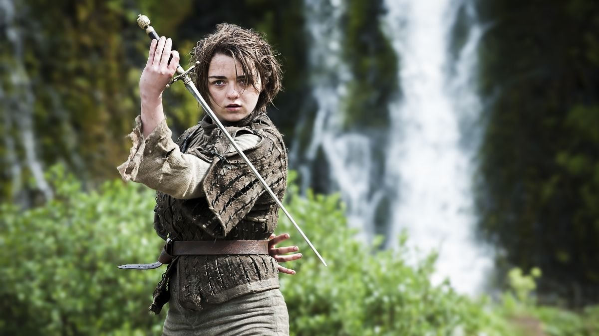

Character
Arya Stark is the third child of Eddard Stark and Catelyn Stark. After narrowly escaping the persecution of House Stark by House Lannister, Arya is trained as a Faceless Man at the House of Black and White in Braavos, and uses her new skills to bring those who have wronged her family to justice.